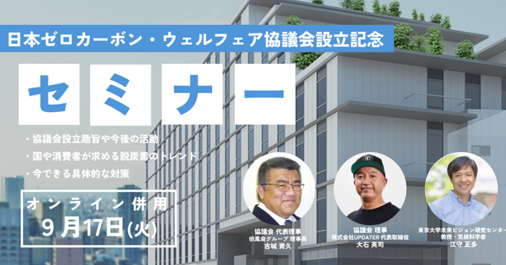
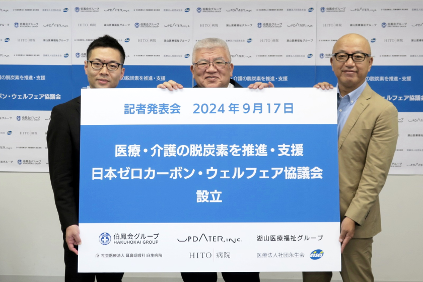

医療・介護業界のゼロカーボン推進
環境と健康を守る、
新たな取り組み
お知らせ News

プラネタリーヘルス専門家会合開催
プラネタリーヘルス専門家会合開催
国際的な知見を共有するとともに、日本の保健医療システムの環境負荷削減や国際社会と連携し得る領域について、最前線で活躍する国内外の専門家とともに議論します。
【開催概要】
日時：2024年11月5日（火）15:00-16:50
形式：対面のみ
会場：Global Business Hub Tokyo
住所：〒100-0004 東京都千代田区大手町1-9-2 大手町フィナンシャルシティ グランキューブ3階
言語：日本語・英語（同時通訳有り）
参加費：無料
主催：日本医療政策機構
共催：グローバル・グリーン・アンド・ヘルシー・ホスピタルズ（GGHH）
後援：日本ゼロカーボン・ウェルフェア協議会、みどりのドクターズ
定員：80名（先着順）
【プログラム】（敬称略・順不同・登壇依頼中を含む）
●15:00-15:10 開会の挨拶
Nick Thorp（グローバル・グリーン・アンド・ヘルシー・ホスピタルズ ネットワークディレクター）
●15:10-15:50 基調講演
Ming-Nan Lin（大林慈済病院 副院長）
古城 資久（日本ゼロカーボン・ウェルフェア協議会 代表理事／伯鳳会グループ 理事長）
●16:00-16:45 パネルディスカッション
Ming-Nan Lin（大林慈済病院 副院長）
古城 資久（日本ゼロカーボン・ウェルフェア協議会 代表理事／伯鳳会グループ 理事長）
Mara Medrano（ヘルスケア・ウィズアウト・ハーム東南アジア リージョナルエンゲージメントマネージャー）
木戸口 結子（アストラゼネカ株式会社 執行役員 コーポレートアフェアーズ本部長）
●16:45-16:50 閉会の挨拶

「日本ゼロカーボン・ウェルフェア協議会」設立
「日本ゼロカーボン・ウェルフェア協議会」設立
一般社団法人 日本ゼロカーボン・ウェルフェア協議会（所在地：兵庫県赤穂市、代表理事：古城資久）は、2024年9月17日（火）に設立されましたことをお知らせいたします。当法人は、ゼロカーボン社会の実現に向けて積極的に活動するとともに、医療・介護業界およびその他関係業界のゼロカーボンへの取り組みを支援いたします。
＜概要＞
法人名
一般社団法人 日本ゼロカーボン・ウェルフェア協議会
発起人
伯鳳会グループ、株式会社UPDATER、医療法人社団永生会、湖山医療福祉グループ、社会医療法人石川記念会 ＨＩＴＯ病院、社会医療法人耳鼻咽喉科麻生病院
設立日
2024年9月17日（火）
所在地
兵庫県赤穂市惣門町53‐6（医療法人伯鳳会 赤穂中央病院内）
体制
代表理事 古城資久（伯鳳会グループ 理事長）
理事 安藤高夫（医療法人社団永生会 理事長）
理事 大石英司（株式会社UPDATER 代表取締役）
理事 湖山泰成（湖山医療福祉グループ 代表）
理事 大橋淳平（社会医療法人耳鼻咽喉科麻生病院 企画室長）
監事 石川賀代（社会医療法人石川記念会 ＨＩＴＯ病院 理事長）
事業内容
再生可能エネルギーの導入・転換の推進
再生可能マテリアルの導入・転換の推進
省エネルギー化の推進・支援
医療・介護関係事業及び、その周辺産業を含めた全事業工程におけるゼロカーボンの推進、ゼロカーボン推進運動に関する出版、セミナー等の企画・開催
動画視聴 MOVIE
メディア掲載 MEDIA
日本ゼロカーボン・ウェルフェア
協議会について
About us
医療・介護業界およびその他関係業界の
ゼロ―カーボンの支援を通して、
脱炭素社会の実現に向け積極的に活動いたします。
気候変動は、今世紀最大の課題の1つとされ、生活環境だけでなく、健康にも深刻な影響を及ぼしています。大気汚染はぜんそくや肺がんを引き起こし、猛暑による熱中症患者の増加や、気候変動による自然災害は直接的に人命にかかわります。医療業界はその影響を直接的に受けていながら、業界自体も大きな炭素足跡を残している現状に直面しています。この二重の課題に対処するため、「ゼロカーボン・ウェルフェア協議会」は設立されました。この新たな組織を通じて、医療・介護業界が気候変動対策においてリーダーシップを発揮し、持続可能な医療サービスの提供を行うことを目指します。
基本情報 Information
| 法 人 名 | 一般社団法人 日本ゼロカーボン・ウェルフェア協議会 |
|---|---|
| 発 起 人 |
株式会社UPDATER 伯鳳会グループ 医療法人社団永生会 湖山医療福祉グループ 社会医療法人石川記念会 HITO病院 |
| 設 立 日 | 令和6年7月11日（木） |
| 所 在 地 | 〒678-0239 兵庫県赤穂市加里屋98番地16 |
| 事務局長 | 櫻井 勇介 |
| 連 絡 先 | zero.carbon-welfare@hakuhokaigroup.com |
| 体 制 |
代表理事
古城資久（伯鳳会グループ 理事長）
理事
安藤高夫（医療法人社団永生会 理事長）
理事
大石英司（株式会社UPDATER 代表取締役）
理事
湖山泰成（湖山医療福祉グループ 代表）
理事
大橋淳平（社会医療法人耳鼻咽喉科麻生病院
企画室長）
監事
石川賀代（社会医療法人石川記念会 HITO病院
理事長）
|
| 事業内容 |
生可能エネルギーの導入・転換の推進 再生可能マテリアルの導入・転換の推進 省エネルギー化の推進・支援 医療・介護関係事業及び、その周辺産業を含めた全事業工程におけるゼロカーボンの推進 ゼロカーボン推進運動に関する出版、セミナー等の企画・開催 |
代表理事ごあいさつ Greeting
医療・介護業界およびその他関係業界のゼロ―カーボンの支援を通して、脱炭素社会の実現に向け積極的に活動いたします。
気候変動は地球的規模の課題であり、生活環境だけでなく、健康にも深刻な影響を及ぼしています。
規模が大きすぎると、自分たちの問題ではないと捉え、今できる行動にすら目を向けることが難しくなります。
大気汚染はぜんそくや肺がんを引き起こし、猛暑による熱中症患者の増加や、気候変動による自然災害や不作は直接的に人命にかかわるものです。
しかしながら我々医療業界は、かけがえのない人命を守るために全力を尽くすことを大義名分に、環境負荷は二の次としてしまいがちで、健康を支えるという原則に矛盾する現状に直面しています。
この二重の課題に対処するため、「ゼロカーボン・ウェルフェア協議会」を設立し、この新たな組織を通じて、医療・介護業界の気候変動対策を後押しすると同時に、持続可能な新しい医療・介護の在り方を示すことを目指します。
一般社団法人 日本ゼロカーボン・ウェルフェア協議会 代表理事 伯鳳会グループ 理事長
古城 資久
医療・介護業界と気候変動について About
世界の死因ファクター
世界保健機関（WHO）によると、気候変動は21世紀最大の単一死因ファクターであるとされています。世界では1年間にタバコで800万人、高血圧で1000万人が亡くなっていますが、気候変動を原因とする栄養失調やマラリア、下痢、暑さなどでは1300万人が命を落としています。このような状況を踏まえ、2023年11月にアラブ首長国連邦・ドバイで開催されたCOP28（第28回気候変動枠組条約締約国会議）では、COPとして初めて健康に焦点を当てた「ヘルスデー（健康の日）」が設けられました。
世界の気候変動対策
世界では医療・介護業界においても、気候変動への対策が進んでいます。例えば、イギリスの国営医療制度「国民保健サービス」では、2020年に医療制度として世界で初めて温室効果ガスの排出量をゼロにする（ネットゼロ）目標を掲げ、太陽光パネルを用いた自家発電機の設置や医薬品の改善、ネットゼロ製品の調達を進めています。EUでは「欧州グリーン・ディール」が公表され、2050年までに温室効果ガスの排出を実質ゼロにする目標が掲げられました。こうした世界的な動きは政策や法的規制となって世界的に広がっていくものと考えられます。
日本の医療・介護業界と気候変動対策
日本では、医療・介護業界が排出する温室効果ガスは、日本全体の排出量の約5％を占めており、産業別では5番目に多く、対応が求められています。こうした背景を受けて、2022年には医学生の学修目標等を示した医学教育モデル・コア・カリキュラムにおいて、2024年度から「気候変動と医療」が必修項目として追加されることになりました。また、診療報酬改定による収益圧迫が続く中、再生可能エネルギーの導入や省エネルギー化によるコスト削減、ESG関連投資の呼び込みなど、脱炭素への取り組みが長期的な経営安定に寄与するとの期待も高まっています。
世界的な気候変動と健康に関する意識の高まりや、各国の取り組みの進展、日本医療を担う人材の環境リテラシー向上が見込まれます。医療・介護業界としては、気候変動対策を道義的責任と捉えるだけでなく、国の規制強化への対応や医療人材の採用・確保、投資・融資など、経営の観点からも積極的に気候変動対策を検討していく必要があります。
参考①：aliterna｜業界の脱炭素化へ医師らが連携「みどりのドクターズ」とは｜2024年1月https://www.alterna.co.jp/111994/
参考②：朝日新聞デジタル｜
保健・医療システムの温暖化対策 英仏の政府主導の先進例とは？｜2024年3月｜https://www.asahi.com/withplanet/article/15207954
発起人の取り組み事例 Case
医療介護施設に
コーポレートPPAによる
再エネ電力の供給
伯鳳会グループでは、UPDATERが運営する小売電力事業「みんな電力」の協力のもと、2023年3月に運営する23か所の医療介護施設にて、コーポレートPPAを通じた再生可能エネルギー電力の利用を開始しました。
コーポレートPPA（Power
Purchase
Agreement）は、需要家と発電事業者の間で長期間の電力買取契約を結ぶ仕組みで、新規の再エネ発電所の開発を促進します。このスキームは、気候変動対策に貢献するだけでなく、再エネの普及にも寄与します。また、卸電力市場価格の変動に左右されない固定価格で電力を長期的に安定供給できるため、施設経営にとってもメリットがあります。この取り組みにより施設の使用電力の約30％を賄い、残りの電力も「みんな電力」から供給を受けることで、再エネ100％の電力で施設を運営しています。
※
再生可能エネルギー由来の電気に、再生可能エネルギー指定の非化石証書の環境価値を組み合わせることで、再生可能エネルギー100％の電気を供給いたします（CO2排出量もゼロとなります）。
脱炭素
トータルソリューションを提供
UPDATERは、これまでの脱炭素サポートの経験を活かし、2021年8月3日から協業企業3社（カジノン株式会社、株式会社電巧社、株式会社トヨコ―）と共に、脱炭素に向けたロードマップ策定から省・創・蓄エネルギーの具体的な実行までをトータルでサポートするサービス「脱炭素トータルソリューション」を提供しています。また、「統合環境ソリューション」を提供する株式会社モデュレックスと協業し、省エネ診断を行い、省エネを含む脱炭素のソリューションも提案しています。
この取り組みの一環として、伯鳳会グループが運営する東京曳舟病院では、瞬時デマンド制御装置を導入した省エネの実証実験や、小まめな消灯や室内温度の再設定など、省エネへの小さな取り組みを啓発するポスター掲示などの企画を実施しており、大小さまざまな省エネアクションを行っています。
再生可能マテリアルの導入
転換の推進
伯鳳会グループでは、照明のLED化を段階的に進めるだけでなく、使い捨て製品の使用削減にも積極的に取り組んでいます。具体的には、手術用ガウンやトレーなどの使い捨て商品を再利用可能なものに置き換えるなどして、品目数で10%の削減を達成しました。この取り組みは、医療の質を維持しながら、環境への負荷を減らすことを目的としています。
伯鳳会グループについて
Hakuhokai
Group
伯鳳会グループは「平等医療、平等介護」を基本理念に、医療法人伯鳳会、社会福祉法人玄武会、社会福祉法人大阪暁明館、社会福祉法人あそか会、医療法人五葉会、医療法人積仁会、有限会社セントラル・メディカル・サービスからなる10の病院と、診療所、介護老人保健施設、介護老人福祉施設、各種通所施設、身体障碍者授産施設、医療専門学校など90を超える事業所を運営しています。
兵庫県赤穂市、姫路市、明石市、加古川市、神河町、尼崎市、大阪市、埼玉県、東京都の9地区で展開し、中でも医療法人伯鳳会は50周年、福祉法人大阪暁明館は100周年を迎えるなど、永い間地域に根差した活動を行っています。
我々は、「医療介護を必要とする方へ、必要な医療介護を過不足なく、適正な価格で、快適に適時提供する」とし、伯鳳会グループの保健・医療・福祉サービスが皆様のお役に立ち、皆様の健康な暮らしに少しでも寄与する事を使命とし、医療・福祉事業を通して社会貢献ができるよう、より一層努めてまいります。
協力・協賛についてのお問い合わせ Contact us
協力・協賛いただける病院・施設・企業さまを募集しております。
協賛や当法人へのお問い合わせは、
下記のお問い合わせフォームよりお気軽に
ご連絡ください。